Standard flow and diffusion pre-training matches the distribution of available data (e.g., molecules), which often covers only a small fraction of the valid design space. In generative discovery, however, one aims to sample valid new-to-nature designs, assigned negligible probability under, and thus inaccessible to, standard models fitted to the observed data. To overcome this limitation, we depart from data distribution matching and view a generative model through its generable set: the region it covers with non-negligible probability. This allows to introduce a new learning principle for out-of-distribution flow modeling: enlarging a model's generable set to increase coverage of the valid design space. We propose Active Flow Expansion (ActFlow), a continued pre-training method that employs verifier feedback to expand a pre-trained model over new valid regions by iteratively adapting to synthetic data generated through active exploration in the learned flow representation. Theoretically, we establish to our knowledge first-of-their-kind statistical learning guarantees for out-of-distribution flow modeling, analyzing generable set expansion as a local-to-global reachability process over a learned representation. Empirically, we assess ActFlow with suitable out-of-distribution generative modeling metrics across small organic molecules, mid-sized drug-like molecules, therapeutic peptides, and protein sequence design tasks. Results show that ActFlow expands valid coverage far beyond the region modeled by the initial pre-trained model, significantly outperforming widely adopted synthetic flow pre-training methods.
Large-scale generative modeling has been transformed by flow and diffusion models, with impressive results across chemistry, biology, and robotics. Yet nearly all of this progress rests on a single learning principle: match the distribution of available data. For a flow $\mu_\theta$ with terminal density $p_1^\theta$, standard pre-training aims for
$$p_1^\theta \;\approx\; p_{\mathrm{data}}.$$
This is a natural target when the goal is to reproduce observed examples — but it is fundamentally the wrong target for out-of-distribution discovery. In real scientific discovery, we want new-to-nature designs: molecules, peptides, and proteins that do not yet exist in nature or in curated datasets, and therefore carry negligible probability mass under $p_{\mathrm{data}}$.
This suggests a different objective. Rather than approximating $p_{\mathrm{data}}$, we ask a flow to approximate the valid design space itself: $\Omega_\theta^\tau \approx \Omega^\star$. We call this new learning principle generable set expansion. The central algorithmic question then becomes: how do we self-generate data that expands the model's generable set, rather than merely reinforcing where it already places high density?
ActFlow is a continued pre-training procedure that turns a pre-trained flow $\mu_{\theta^{\mathrm{pre}}}$ into a sequence of successively expanded models $\mu_{\theta_1}, \mu_{\theta_2}, \ldots$ whose generable sets grow toward $\Omega^\star$. The key idea is to actively steer self-generation toward high-uncertainty, potentially-valid frontier regions of a learned flow representation — not the raw design space $\mathcal{X}$.
Fit uncertainty over the learned flow representation. At noising level $s \in (0,1)$, the velocity network $\mu_\theta$ exposes hidden features $\phi_s^t : \mathcal{X} \to \mathcal{Z}_s$ — an intermediate, learned representation. We treat verifier labels as noisy observations of an unknown validity score on $\mathcal{Z}_s$ and fit a linear-kernel Bayesian model to get a closed-form posterior variance $\sigma_t(x)$.
Self-generate at the frontier. We sample $x_{t+1}$ from a distribution that trades off verifier uncertainty against the current model prior:
$$x_{t+1} \sim \tilde{p}_t \in \arg\max_{q}\; \mathbb{E}_{x \sim q}\!\left[\,\sigma_t\!\bigl(\phi_s^t(x)\bigr)\,\right] \;-\; \beta\,\mathrm{KL}\!\left(q \,\|\, p_1^{\theta_t}\right).$$
As $\beta \to \infty$ this recovers standard sampling; as $\beta \to 0$ it becomes pure uncertainty maximization. Intermediate $\beta$ steers exploration toward likely-valid frontier regions.
Query a black-box verifier. The candidate is validated by a (possibly experimental, non-differentiable) verifier: $y_{t+1} = \tilde{v}(x_{t+1}) \in \{0,1\}$. The pair $(x_{t+1}, y_{t+1})$ is appended to the buffer $\mathcal{D}_{t+1}$, sharpening the surrogate for the next round.
Continued pre-training with signed replay. The flow is updated by a flow-matching step on newly accepted samples, optionally combined with an unlearning gradient on rejected ones:
$$g_t = \nabla \widehat{L}_t^{+}(\theta_t) - \alpha_t \, \nabla \widehat{L}_t^{-}(\theta_t).$$
Across rounds, ActFlow reallocates model mass from dominant pre-trained modes toward newly discovered valid regions of $\Omega^\star$.
Input: pre-trained flow $\mu_{\theta_0}$, black-box verifier $\tilde{v}$, representation timestep $s \in (0,1)$, iterations $T$.
A natural worry is that active exploration might merely redistribute density inside the pre-trained generable set. Our main theoretical result shows this is not the case: under the assumptions stated in the paper, ActFlow provably expands the generable set, and it does so along a controllable, local-to-global reachability process over the learned representation.
Concretely, given a starting valid subset $S_0 \subseteq \Omega_{\theta_0}^\tau$ and a one-step reachability operator $R_\epsilon$ (defined via the Lipschitz behavior of the latent validity score $g$), one may consider its $H$-fold iterate $R_\epsilon^H(S_0)$ — the maximum valid set that can be certified from $S_0$ in $H$ local expansion steps. Then:
In words: every valid region reachable from $S_0$ in $H$ verifier-certifiable steps is eventually covered by the model's generable set, with a sample complexity governed by an information-gain quantity of the learned representation. A companion corollary transfers the guarantee from representation space $\mathcal{Z}$ back to the design space $\mathcal{X}$.
We evaluate ActFlow against two widely adopted self-generation baselines: continued pre-training on unfiltered model samples (Rec-NF) and on verifier-filtered samples (Rec-F). Because standard likelihood metrics reward distribution matching — the exact opposite of what we care about — we use OOD-aware metrics: coverage (number of valid clusters), diversity (Vendi score), and validity.
A two-dimensional design space with a non-trivial valid region (green) lets us visualize the generable set directly. ActFlow (violet) expands the pre-trained generable set to near-optimally cover the valid space — through sparse directions to new corners — while both baselines stall.
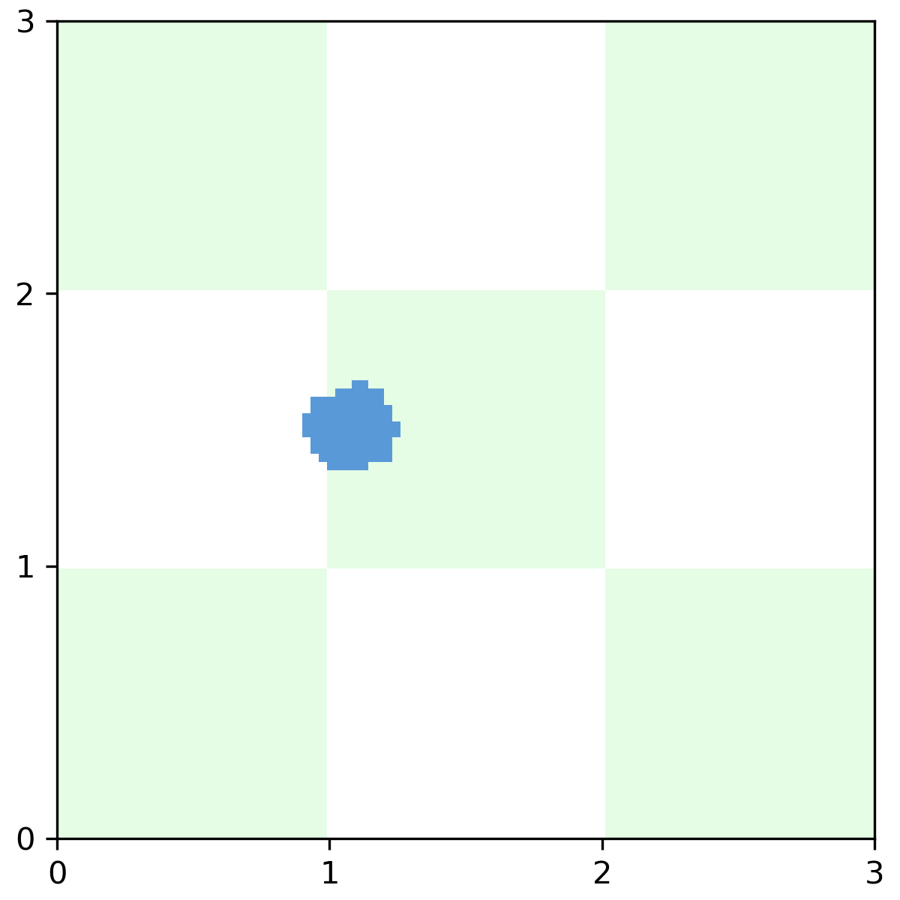
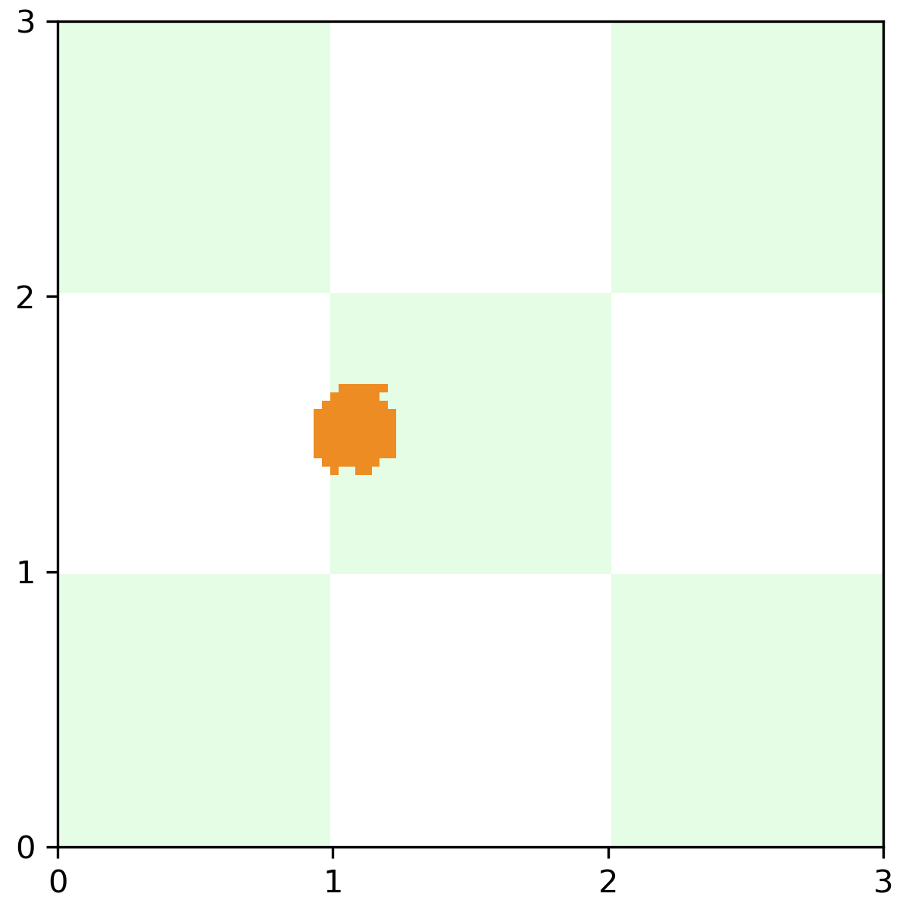
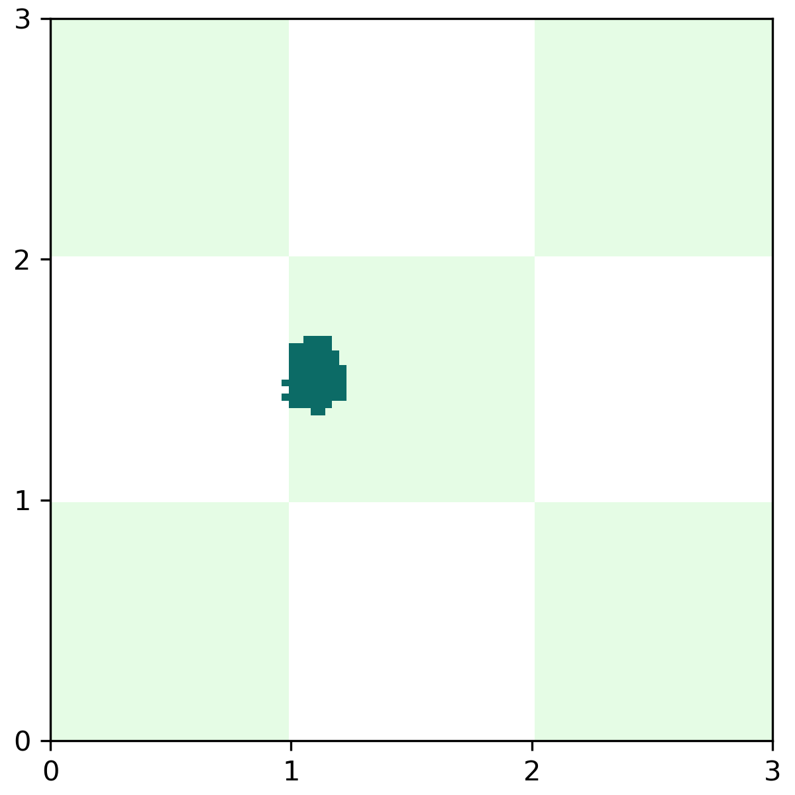
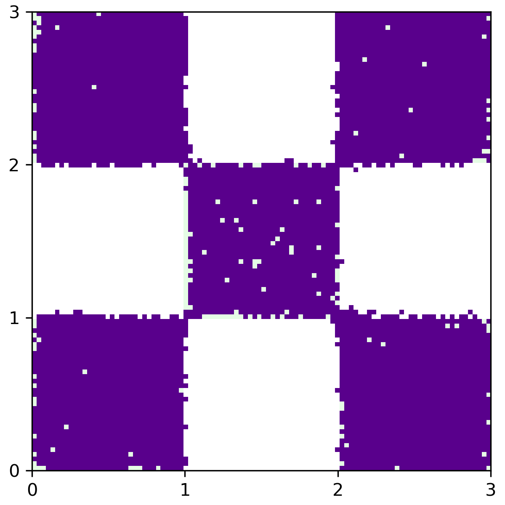
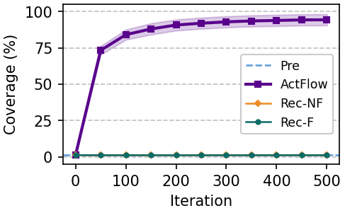
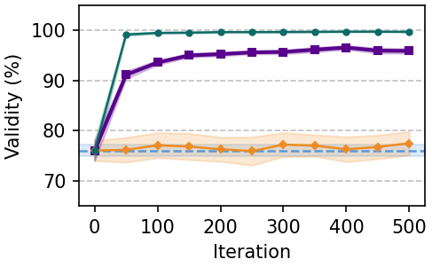
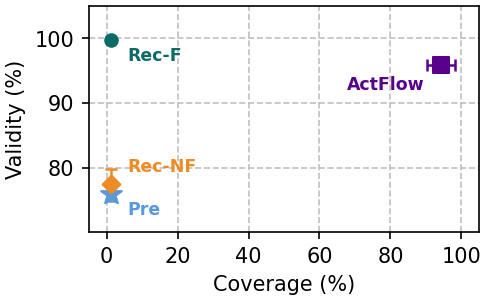
Applied to the FlowMol Gaussian model pre-trained on QM9, ActFlow substantially expands valid molecular coverage to 88.4 valid clusters (vs. 45.4 for Rec-F and 42.8 for Rec-NF), attains the highest Vendi diversity (306.1), and preserves 95.9% validity. Rec-F preserves validity but expands little; Rec-NF collapses validity to 12.3%.
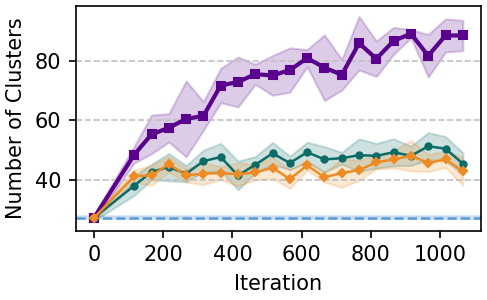
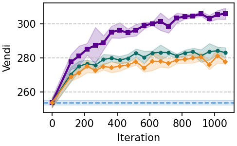
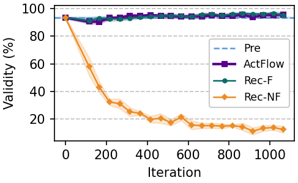
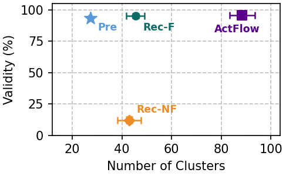
Scaling to the substantially larger, chemically-relevant GEOM-Drugs dataset, ActFlow drives coverage to 144.3 valid clusters (vs. 89.3 for Rec-F, 44.7 for Rec-NF) while achieving the top Vendi score of 303.1 and matching Rec-F on validity (56.6% vs. 58.8%). Rec-NF, again, collapses.
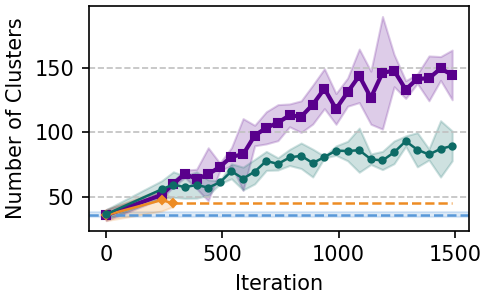
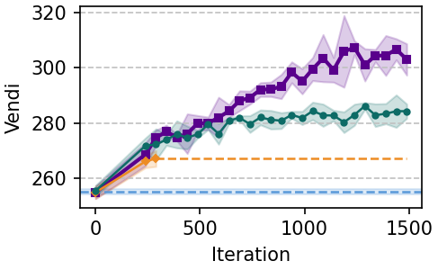
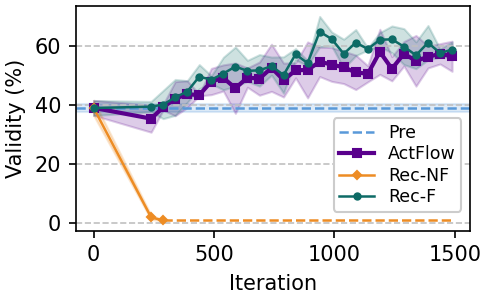
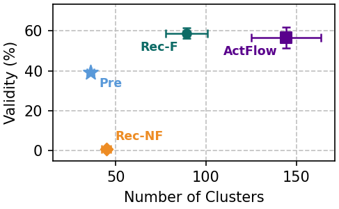
To probe generality beyond continuous flows, we apply ActFlow to a SMILES discrete diffusion model from PepTune, pre-trained on therapeutic peptides. ActFlow drives the number of PeptideCLM-embedding clusters from 61 to roughly 358, while maintaining validity. Rec-NF collapses to 0% validity (a single misplaced token invalidates a peptide); Rec-F improves validity but leaves coverage nearly unchanged.
Finally, we evaluate ActFlow on protein sequence design via an ESM-based continuous diffusion model from SGPO, pre-trained on the CreiLOV fluorescence dataset. ActFlow expands token-level ESM coverage from 66.5 to 102.8 valid clusters, achieves the top Vendi diversity of 42.1 (versus 12.9 for the pre-trained model), and simultaneously improves validity from 70.8% to 83.7% — a strictly stronger coverage–diversity–validity profile than either baseline.
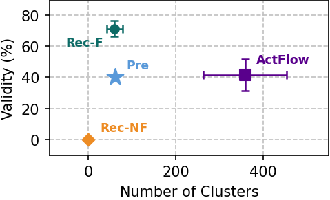
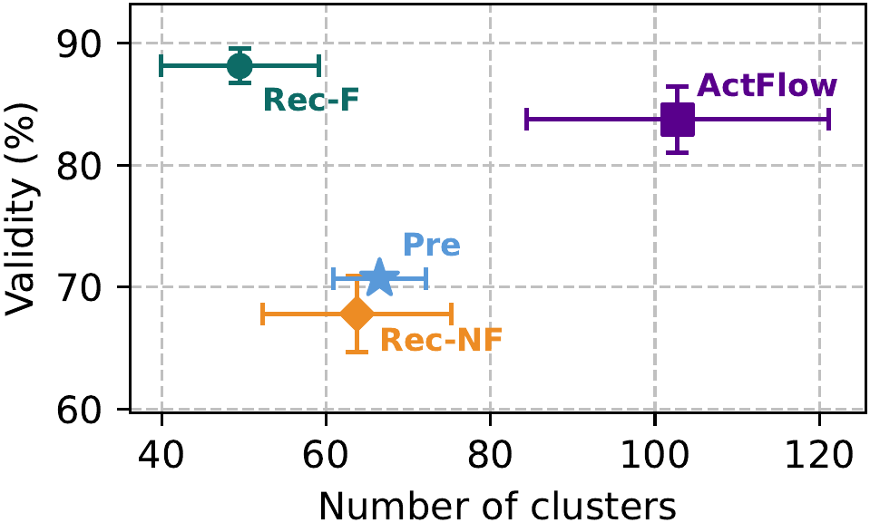
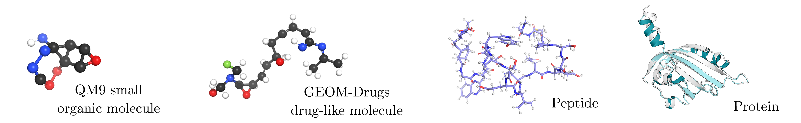
| Therapeutic peptides | Protein sequences | |||||
|---|---|---|---|---|---|---|
| Method | Coverage ↑ | Diversity ↑ | Validity ↑ | Coverage ↑ | Diversity ↑ | Validity ↑ |
| Pre-trained | 44.3 | 13.5 | 39.3% | 66.5 | 12.9 | 70.8% |
| Rec-NF | 0.0 | 0.0 | 0.0% | 63.8 | 11.9 | 67.8% |
| Rec-F | 59.7 | 13.6 | 71.2% | 49.5 | 11.7 | 88.1% |
| ActFlow (ours) | 358.3 | 58.9 | 41.6% | 102.8 | 42.1 | 83.7% |
Numbers are means over seeds; see Table 2 in the paper for standard deviations and additional metrics (FID). The pattern is consistent across all four biochemical settings: ActFlow substantially expands valid coverage and diversity beyond what any purely recursive baseline can achieve.
@article{desanti2026active,
title = {Active Flow Expansion for Out-of-Distribution Discovery: from Theory to Molecules},
author = {De Santi, Riccardo and Lee, Bruce and Perez Jensen, Cristian and Protopapas, Kimon and Tang, Sophia and Liu, Cheng-Hao and Chatterjee, Pranam and Yue, Yisong and Krause, Andreas},
journal = {arXiv preprint arXiv:2606.08802},
year = {2026}
}